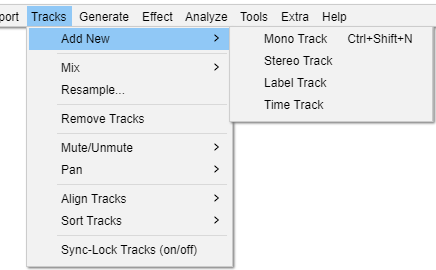
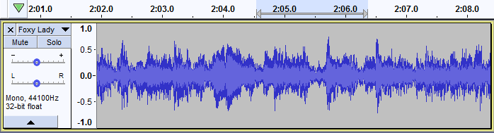

Tracks Menu: Add New
- Click, or hover, on any menu item in the image to read about that command. Skip the image
- 
Mono Track Ctrl + Shift + N
Creates a new, empty mono audio track. This command is rarely needed, since importing, recording and mixing automatically create new tracks as needed. But you can use this to cut or copy data from an existing track and paste it into an empty track.

Stereo Track
Creates a new, empty stereo Audio Track. You may need this if you start with a set of mono tracks and want to export a stereo mix.
{kind=link}
Label Track
Creates a new, empty Label Track. When a label track has the yellow focus border you can create a label just by typing. Labels can be used for textual annotation and are commonly used when exporting multiple files from a single track.
Time Track
Creates a Time Track that can progressively increase or decrease playback speed (and pitch) of all audio tracks in the project. The range of possible speed warp is set in the Set Range (upper and lower) option in the Time Track dropdown menu to left of the track. The amount of and direction of warping within that range is controlled using Envelope Tool.